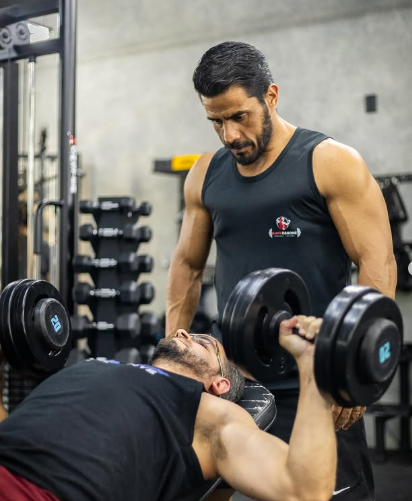
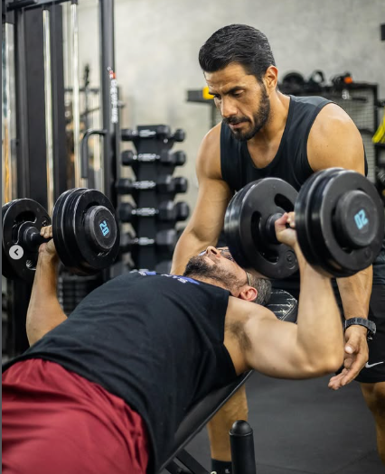
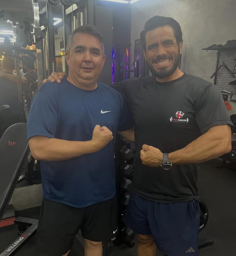
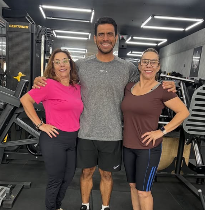

Emagrecer com direção
Organizar o treinamento como parte de um processo de melhora da composição corporal, junto aos hábitos e à alimentação.
Quer emagrecer, ganhar massa muscular ou ficar mais forte? Seu treinamento precisa fazer sentido para o seu objetivo e para a sua rotina.
Acompanhamento para começar, retomar a rotina ou evoluir, com atenção ao seu objetivo e à execução de cada movimento.

Antes de cobrar mais esforço de você, vale perguntar: o seu treino tem uma direção clara?
Você separa um tempo na rotina, veste a roupa de treino e vai. Mas, entre um exercício e outro, as dúvidas aparecem.
Copiar exercícios da internet ou trocar de treino toda semana pode deixar tudo ainda mais confuso.
Você não precisa descobrir cada passo por tentativa e erro.

Não é preciso ter o mesmo objetivo de quem treina ao seu lado. É preciso saber como trabalhar pelo seu.
Organizar o treinamento como parte de um processo de melhora da composição corporal, junto aos hábitos e à alimentação.
Dar propósito aos exercícios e à progressão, em vez de depender de uma sequência diferente a cada semana.
Trabalhar para avançar no treinamento com atenção à execução e ao seu ponto de partida.
Encontrar uma direção para construir uma rotina de treino que você consiga manter.
Você não precisa fazer tudo.
Precisa entender o que faz sentido para você.
Você já sabe que precisa de consistência. O difícil é manter a rotina quando não entende o que está fazendo ou por que está fazendo.
Um treino com propósito deixa o próximo passo mais claro.
Menos tempo tentando adivinhar. Mais clareza para colocar em prática.

Personal trainer
Treinar fica mais claro quando você tem com quem conversar sobre suas dúvidas. Conheça Elison Danone e sua atuação no dia a dia da academia.
O primeiro passo é entender seu objetivo, sua experiência e o tempo que você tem disponível. A partir dessa conversa, você conhece a proposta de acompanhamento.
Seja para começar, retomar a rotina ou buscar mais evolução, o primeiro passo é olhar para o seu momento.
Seu objetivo, sua experiência e sua rotina precisam entrar nessa conversa.
Conheça o conteúdo do Elison ↗Cada pessoa chega com uma história e um objetivo. Estes registros mostram o contato de Elison com quem treina na academia.
Um registro de Elison com um aluno na academia.

Um encontro na academia: diferentes pessoas, cada uma com seu próprio caminho no treino.
As imagens apresentam registros na academia. Resultados individuais dependem de fatores como ponto de partida, rotina, alimentação e adesão ao treinamento.
Você pode continuar testando exercícios, começando e parando, sem saber se o treino está levando você a algum lugar.
Ou pode começar pela pergunta que importa: o que preciso organizar para dar o próximo passo?
Você não precisa resolver tudo hoje.
Pode começar com uma conversa.
Acompanhamento não substitui a sua participação. A ideia é dar direção ao esforço que você está disposto a colocar.
Converse diretamente com Elison para confirmar o formato disponível, os valores e o que está incluído.
Fale sobre o que deseja, sua experiência com treino e como está sua rotina hoje.
Entenda as modalidades disponíveis, como funciona o serviço e quais são as condições.
Tire suas dúvidas e avalie se o acompanhamento faz sentido para você.
Nem acompanhar o ritmo de quem treina há anos.
O seu ponto de partida não precisa ser igual ao de ninguém. Sua experiência, suas dificuldades e sua rotina são informações para organizar o caminho — não motivos para adiar a conversa.
Quer conhecer os detalhes do serviço?
Pergunte ao Elison no WhatsApp ↗Você pode entrar em contato mesmo sem experiência. Conte ao Elison que está começando para entender como a proposta pode considerar seu nível atual.
Faz sentido conversar se você busca mais organização ou tem dúvidas sobre a direção do treino. Apresente sua rotina atual e o que deseja melhorar para avaliar a proposta.
Sim. Use o primeiro contato para explicar seu objetivo de ganho de massa muscular ou força e confirmar com Elison como ele pode ajudar.
Confirme diretamente com Elison quais modalidades estão disponíveis, a localização do atendimento presencial e as condições de cada formato.
A frequência e a duração precisam considerar seu objetivo, sua experiência e sua disponibilidade. Leve essas informações para a conversa, em vez de assumir que precisa passar horas na academia.
Não. A evolução varia conforme o ponto de partida, a rotina, a alimentação e a adesão ao treinamento. Nenhum prazo de transformação é garantido nesta proposta.
Os valores, as condições e os recursos do acompanhamento devem ser confirmados diretamente com Elison pelo WhatsApp antes da contratação.
Emagrecer. Ganhar massa. Ficar mais forte. Voltar a se movimentar. Conte ao Elison o que você busca e entenda como funciona o acompanhamento.